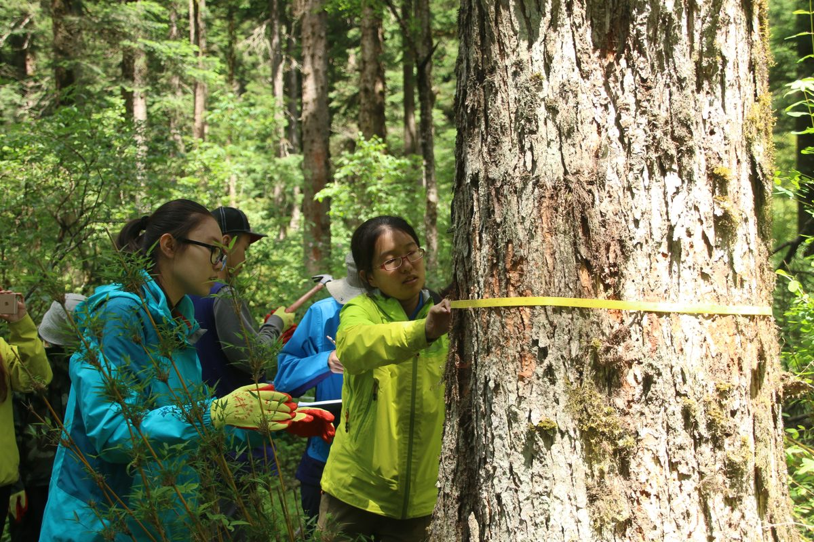
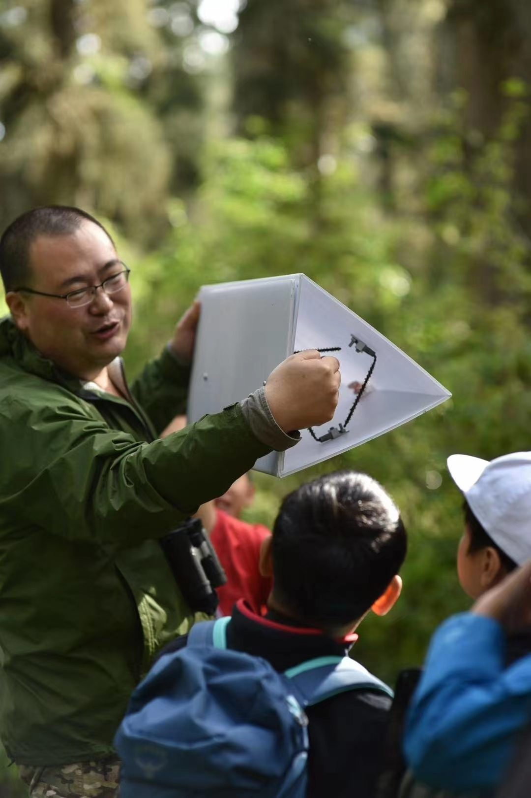
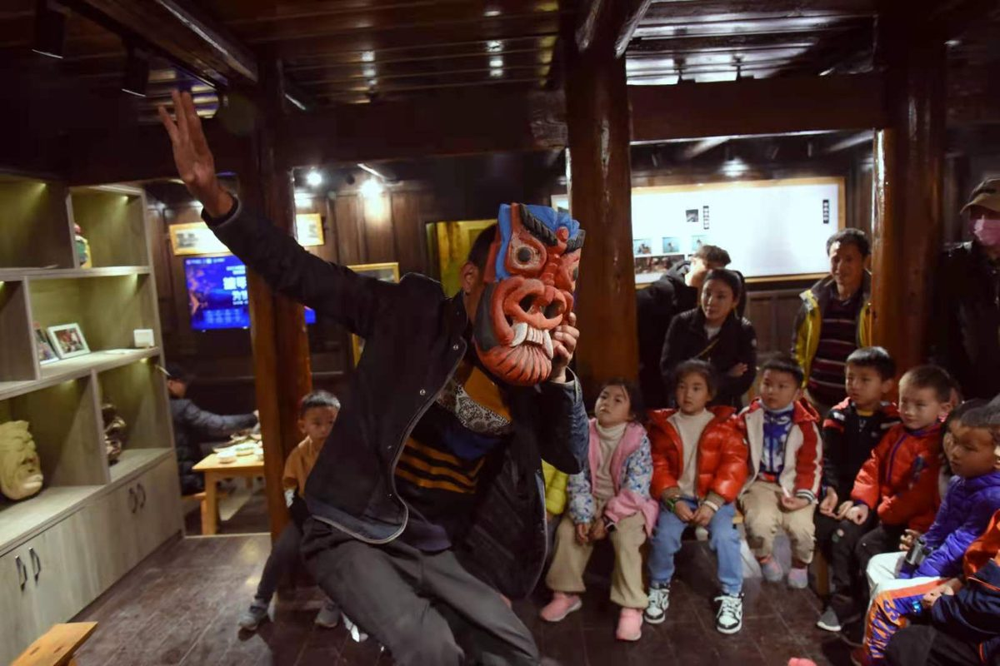
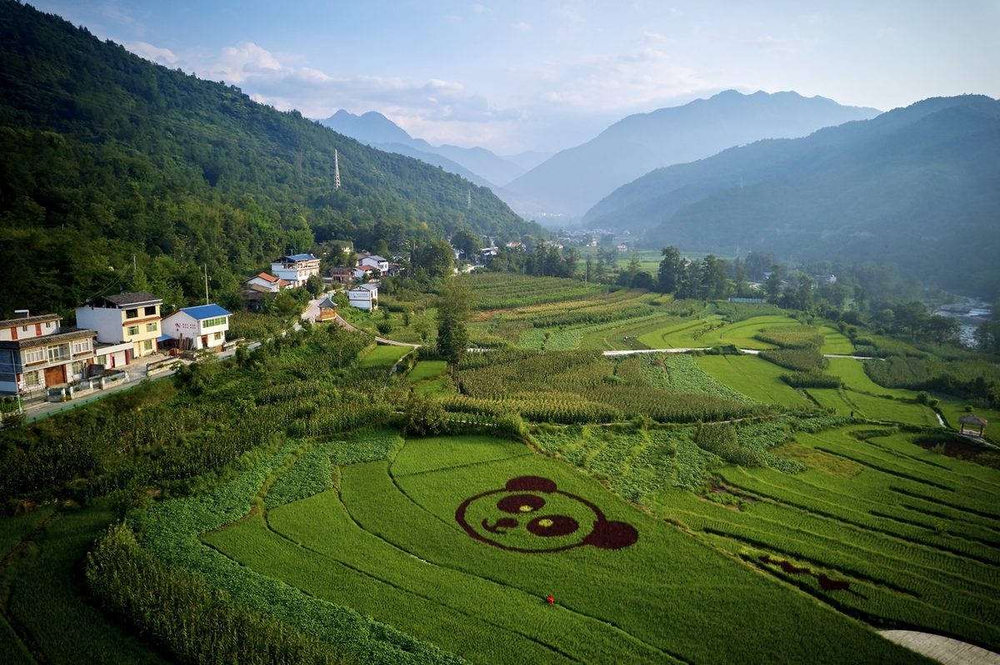

自然保护地与国家公园
建设自然教育体系、公众参与机制、科普解说体系和生态体验产品。
我们服务谁
建设自然教育体系、公众参与机制、科普解说体系和生态体验产品。
梳理资源价值，设计基地、课程、活动和人才培训方案。
开发自然课程、研学线路、导师手册、活动包和安全管理流程。
将森林、田园、社区文化和健康生活方式转化为体验型产品。
客户常见问题
人合自然的工作不是简单做一场活动，而是帮助场域建立可复制、可培训、可传播、可持续的自然教育与康养服务系统。
服务内容
基于现有资料，人合自然的能力覆盖政策研究、专项规划、基地建设、课程产品、品牌活动、人才培训、标准研究、科研出版和运营指导。
自然教育规划、森林康养规划、生态旅游规划、社区发展规划、实施方案和可行性研究。
自然教育小径、宣教点、展馆、驿站、基地、营地、解说标识系统和研学服务体系。
自然课堂、全年系列课、半日/多日课程、夜间观察、营地活动、品牌活动和示范课程。
森林五感体验、慢行观察、森林运动、茶养农养、社区文化体验和自然健康生活方式内容。
自然教育师、生态导赏员、基地运营人员、志愿者和活动执行团队培训。
品牌活动策划、内容运营、课程库建设、案例沉淀、专家库协同和持续运营指导。


交付成果
人合自然会根据场地资源、目标客群、运营阶段和合作目标，组合规划方案、课程产品、活动工具、人员培训和传播内容。
项目经验


产品方向
面向亲子家庭、学校研学、自然爱好者、企业团队和康养体验人群，可设计自然观察、生态科考、社区文化、森林慢行、夜间观察、主题营地和导师培训等产品。
合作流程
适合新建项目、已有基地提升、课程产品升级、品牌活动策划和森林康养服务导入。
明确项目目标、服务对象、资源基础、运营阶段和预算边界。
通过资料研判、现场踏勘、访谈和资源梳理，找到可落地的主题与服务机会。
形成规划路径、产品体系、课程活动、空间场景、培训和运营建议。
支持课程试运行、活动执行、导师培训、品牌传播和项目复盘优化。
专业支撑
人合自然参与和完成了多项自然教育、森林康养相关规划、设计、可研、标准、课程设计等工作，并参与出版《森林教育指南》《自然教育指南》《自然教育概论》《森林康养理论与实践》等专业书籍。
合作沟通
您的场地有什么资源？希望服务哪些人群？未来希望形成课程、活动、基地、品牌还是持续运营？这些问题越清楚，合作方案越容易落地。